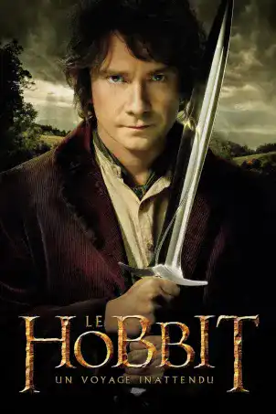
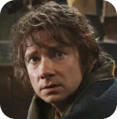
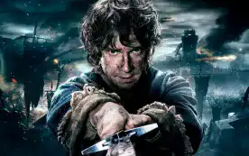

Cinéplique

The Hobbit : An unexpected Journey
Poster of the film The Hobbit: An Unexpected Journey
Discovering the world of Tolkien
The Hobbit: An Unexpected Journey is a film directed by Peter Jackson, released in 2012. It is the first part of a trilogy adapted from the novel The Hobbit by J.R.R. Tolkien, published in 1937. The film is a prequel to the Lord of the Rings trilogy, set sixty years later in the same world fantasy world. The film recounts the adventures of Bilbo Baggins, a hobbit who sets out with the wizard Gandalf and a company of company of thirteen dwarves to reclaim the kingdom of Erebor, overrun by the dragon Smaug.
Les personnages principaux

Gandalf the grey

Bilbon Saquet
Thorin Écu-de-chêne

Gollum
Bilbo is a hobbit who sets off on an adventure with Gandalf, a wise and mischievous wizard, Thorin, a dwarf, and Gollum and Gollum, a mad, lonely creature.
A successful film
The film was made against the backdrop of the success of the Lord of the Rings trilogy, which was adapted from the novel eponymous novel by J.R.R. Tolkien, published between 1954 and 1955. This trilogy, also directed by Peter Jackson, enjoyed a commercial success, winning numerous awards including 17 Oscars. The Hobbit: An Unexpected Journey is therefore an eagerly awaited sequel for fans of Tolkien's universe, who are want the characters, locations and atmosphere of The Lord of the Rings.
The film also aims to introduce viewers to The Hobbit, a lesser-known novel. less well known than The Lord of the Rings, but which is just as rich and exciting. The film aims to respect the spirit of the book, which is lighter and more humorous than The Lord of the Rings. of the Rings, while making it more epic and complex, by adding elements from Tolkien's other works, such as the appendices to The Lord of the Rings or The Silmarillion
The film and the book: a faithful but free adaptation
The film is based on the novel by J.R.R. Tolkien, published in 1937. It is the first film in a trilogy directed by Peter Jackson, who also made The Lord of the Rings. The film follows the book, which recounts the journey of Bilbo Baggins, a hobbit, with Gandalf, a wizard, and the dwarves, to take back a kingdom from a dragon. The film retains the scenes and spirit of the book, but also adds elements from other books by Tolkien's books, or invented by the scriptwriters.

Colin Duriez's book on J.R.R Tolkien
Spectators and fans: mixed reactions
Audiences may or may not like the film, depending on whether or not they are familiar with the book. Some find that the film respects and enriches the book, adding links with The Lord of the Rings and making the story more epic. Others find that the film betrays and overlays the book, adding things that are not necessary, and by the charm and simplicity of the book.